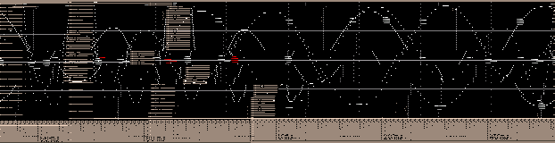

To interpolate means, to find a rule to create points in between a given set of points based on a rule. Kwave supports different types of interpolation (rules).
The linear interpolation connects all dots through a line. All points on the line define the points in between. This provides a statistical most errorfree interpolation, but does not provide a smooth function, that may be desirable for audio purposes ( )

The rule is to find a polynom that goes though all the given points. Based on the function of the polynom the points in between are calculated. This has some disadvantages.
When changing one point, the whole interpolation function is affected, an effect that may not be desired. Here is an example that demonstrates this effect. The red point was moved, and a new was function interpolated. Both functions differ slightly at every point, but the given ones, only becauseone value was changed!
Furthermore the polynomial function is smooth, but does describe a rather long way. It oscillates around the given points. An interpolation rule (the cubic spline interpolation) that keeps closer to the points, while staying smooth will be introduced later

You can also see, that this solution has a flaw. You don't get a smooth function, because the interpolated pieces don't fit together all the times. So perhaps there should be a found a rule, that allows to fit them together.

One way to obtain derrivation of a point would be to take the two nearest point, draw a line through them, and then take the derrivation of this line.